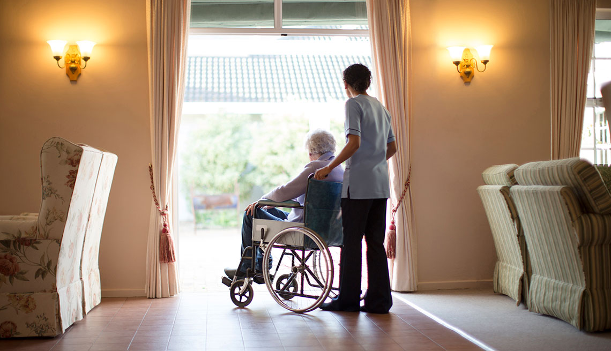
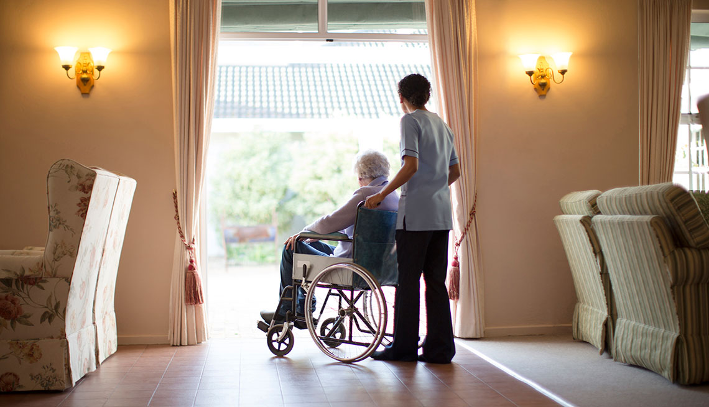

Housing Guide
One Size does not fit all. There are a large number of facilities that GoodFit works with and we do our best to match our clients with the one that will enable them to live a happy life. Below we share a brief overview of different types of facilities.
Select a housing option to see additional information

 

55+
Are you ready to downsize your house and spend more time with your community? A 55+ community may be for you. These types of communities are often made up of individuals or couples that that are self-sufficient, but like the idea of being within a community of people like themselves. These communities often have options like social activities, golf, and security. 55+ communities tend to be close to shopping centers as well as libraries and churches. These can be townhouses, homes or apartments.
Senior Apartments
Senior apartments are for typically offered to those that are 55+. Where they differ compared to 55+ type of homes or facilities is that they are more accessibility and are for those that are less active. Seniors prefer these over standard apartments because they have them in mind always. They will more have handicap accessible units and features such as handrails in bathroom. These apartments do not have the features like social activities, housekeeping or medical care. These types of facilities offer low level of care.
Co-housing
Co-housing communities offer a similar lifestyle to the normal suburbs, but with less work. Here the houses are closer in way that makes the yards smaller. This will mean less work for you and more time to spend with your friends and neighbors. These communities are for those who are 55+. These communities typically offer basic amenities and mainly focus on activities that help connect the community together.
Assisted Living
Assisted living facilities offer 24 hour assistance with daily activities. These facilities do not have medical services such as nurses or doctors. Services available for these type of facilities include laundry service, social activities, bathing, toileting, dressing, medication assistance, security and emergency calls.
Nursing Homes
Do you feel more comfortable with 24 hour assistance for you or your loved one? Then an assisted living facility may be the best option for you. These facilities have more features included than independent living or assisted living. Features in this are 24 hour assistance with activities of daily life, medical care by nurses, therapists, housekeeping and doctors on call. Condition specific care is also available in these facilities.
55+
Are you ready to downsize your house and spend more time with your community? A 55+ community may be for you. These types of communities are often made up of individuals or couples that that are self-sufficient, but like the idea of being within a community of people like themselves. These communities often have options like social activities, golf, and security. 55+ communities tend to be close to shopping centers as well as libraries and churches. These can be townhouses, homes or apartments.
Senior Apartments
Senior apartments are for typically offered to those that are 55+. Where they differ compared to 55+ type of homes or facilities is that they are more accessibility and are for those that are less active. Seniors prefer these over standard apartments because they have them in mind always. They will more have handicap accessible units and features such as handrails in bathroom. These apartments do not have the features like social activities, housekeeping or medical care. These types of facilities offer low level of care.
Co-housing
Co-housing communities offer a similar lifestyle to the normal suburbs, but with less work. Here the houses are closer in way that makes the yards smaller. This will mean less work for you and more time to spend with your friends and neighbors. These communities are for those who are 55+. These communities typically offer basic amenities and mainly focus on activities that help connect the community together.
Assisted Living
Assisted living facilities offer 24 hour assistance with daily activities. These facilities do not have medical services such as nurses or doctors. Services available for these type of facilities include laundry service, social activities, bathing, toileting, dressing, medication assistance, security and emergency calls.
Nursing Homes
Do you feel more comfortable with 24 hour assistance for you or your loved one? Then an assisted living facility may be the best option for you. These facilities have more features included than independent living or assisted living. Features in this are 24 hour assistance with activities of daily life, medical care by nurses, therapists, housekeeping and doctors on call. Condition specific care is also available in these facilities.